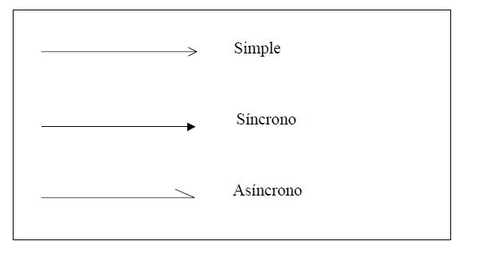

Mensajes
Los mensajes representan la comunicación entre los objetos y se dibujan como líneas horizontales continuas, dirigidas desde el objeto que envía el mensaje hasta el objeto que lo ejecuta. La flecha especifica si el mensaje es simple, síncrono o asíncrono, tal como podemos ver en la Figura 4.1.

En UML se distinguen los siguientes tipos de mensajes:
• Simple: Representa un flujo de control simple. Muestra cómo el control se pasa de un objeto a otro sin describir ningún detalle sobre la comunicación. Este tipo de mensajes se utiliza cuando los detalles sobre la comunicación no son conocidos o no se consideran relevantes en el diagrama. También se usa para mostrar la vuelta de un mensaje síncrono.
• Síncrono: Representa un flujo de control anidado, implementado como una llamada a una operación. La operación que soporta el mensaje se termina (incluyendo otros mensajes anidados) antes de que el objeto que envió el mensaje continúe con su ejecución. La vuelta se puede mostrar como un mensaje simple.
• Asíncrono: Representa un flujo de control asíncrono. No hay vuelta explícita al objeto que envió el mensaje, el cual continúa ejecutándose después de enviar el mensaje sin esperar ninguna respuesta. Este tipo de mensajes se utiliza en los sistemas de tiempo real donde los objetos se ejecutan concurrentemente.
Los mensajes tienen un nombre, el cual puede aparecer o no acompañado de parámetros. También pueden tener condiciones, expresadas entre corchetes, que se usan para modelar ramas o decidir si se envía o no un mensaje. Si las condiciones describen ramas, se pueden dar dos posibilidades. Una alternativa es que las condiciones sean excluyentes y entonces sólo se ejecute un mensaje cada vez. La otra es que no se excluyan, con lo cual los mensajes son enviados concurrentemente.
En el ejemplo de la Figura 4.2 podemos observar los componentes descritos anteriormente para un diagrama de secuencia.